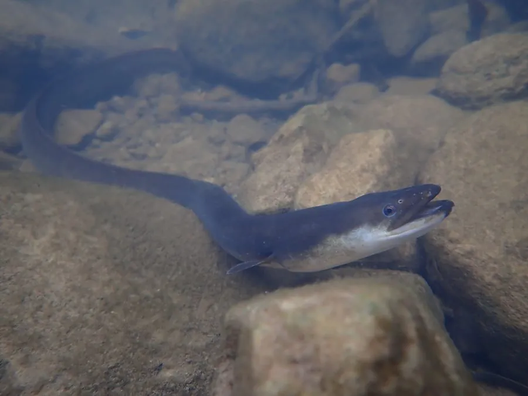

鱼类 · 动物界
日本鳗鲡 Anguilla japonica

在淡水生长、洄游到深海产卵的鳗鲡，肉质肥美，是东亚重要的养殖与食用鱼类，野生资源已明显衰退。
- 分类
- 门脊索动物门纲硬骨鱼纲目鳗鲡目科鳗鲡科属鳗鲡属
- 栖息环境
- 淡水江河、湖泊和水库，成熟后降河入海，产卵场位于深海
- 地理分布
- 东亚沿海及河流，包括中国、日本、朝鲜半岛和台湾，产卵场在菲律宾海一侧
- 保护级别
- IUCN 濒危（EN）；中国未列入国家重点保护野生动物名录
物种志
日本鳗鲡体细长如蛇，前部呈圆筒形，后部侧扁；鳞片极细小且埋在皮下，皮肤分泌大量黏液，摸起来十分滑腻。背鳍、臀鳍与尾鳍相连，没有腹鳍。体色背部灰绿或暗褐，腹部灰白。雌鱼体长一般 60–90 cm，雄鱼较小，约 40–70 cm。
日本鳗鲡的生活史长期是个谜：它们在江河湖泊中生长 5–15 年，性成熟后于秋季降河入海，洄游数千千米到马里亚纳海沟西侧的深海产卵场繁殖，孵化出的柳叶鳗随北赤道流漂流约半年，变态为玻璃鳗后回到亚洲沿岸，再溯河进入淡水。它是肉食性、夜行性鱼类，捕食小鱼、虾蟹、水生昆虫和螺类，白天藏在洞穴和石缝中。由于过度捕捞、栖息地丧失和洄游通道被阻断，野生鳗苗资源锐减，IUCN 已将其列为濒危，目前养殖所需的鳗苗几乎全部来自野外捕捞。
形态与习性
- 食性肉食性，捕食小鱼、虾蟹、水生昆虫和螺类
- 体长雌性 60–90 cm，雄性 40–70 cm
- 寿命约 10–20 年
- 洄游秋季降河入海，洄游数千千米到深海产卵场产卵
- 繁殖产卵场位于马里亚纳海沟西侧，幼体经柳叶鳗阶段漂回亚洲
- 习性夜行性，白天藏在洞穴、石缝中
趣味知识
- 日本鳗鲡的产卵场直到 2009 年才被确认位于马里亚纳海沟西侧海域。
- 它能从水中短暂爬到岸上，在潮湿的草地和泥地中移动。
- 人工养殖的鳗苗至今几乎全部来自野外捕捞，尚无法完全人工繁殖量产。